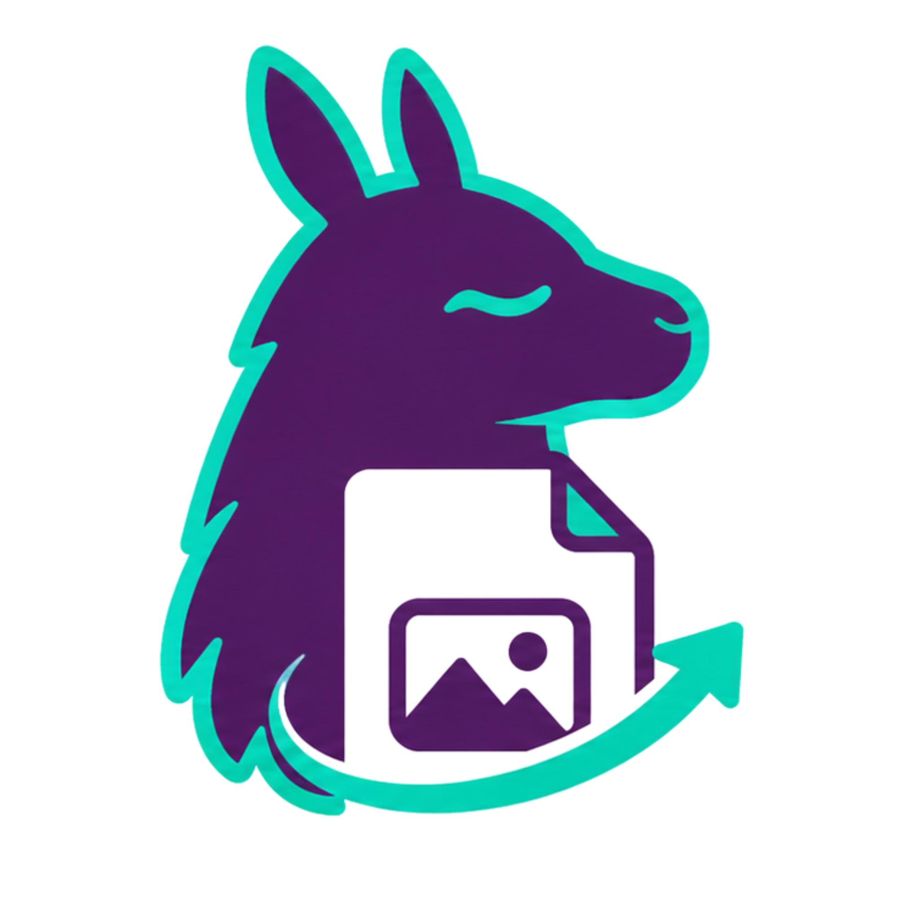

PachaPDF
by PachaTech
Herramientas
Ayuda
◐ Tema
PROTOTIPO VISUAL · Los datos y botones de muestra no procesan archivos reales. La implementación funcional se describe en la especificación.
Vista previa de imagen
✕ Cerrar
🏞️
pachapdf_extract_p002_img001.png · 1920 × 1080
Volver a resultados